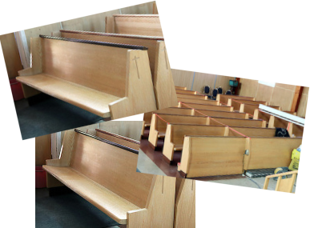

Assemblée générale (12 novembre)
Conformément à l'article 50 de la loi sur les fabriques, vous êtes par la présente convoqué(e)s à une assemblée des paroissiennes et paroissiens qui aura lieu le 12 novembre 2023 à 15h00 en l'église de Senneterre.
Bancs d'église à vendre
Idéal pour projet ou pour décors
100$ petit / 150$ grand
Contactez Nancy au (819) 737-2045
(sur les heures de bureau (mar-jeu))
fabriquesenneterre@outlook.com
Équipe de la Joie (recrutement)
Notre mission est d’apporter de la joie aux personnes de notre entourage, surtout celles qui sont seules ou malades. Nous avons besoin de bénévoles pour remplir ce mandat.
Comment ? En soulignant les fêtes (Noël, Pâques, anniversaires), visites, téléphones et toutes initiatives pour contrer l’isolement de nos aînés
Si vous êtes intéressé(e)s à joindre l’équipe de la Joie, vous pouvez donner votre nom au secrétariat au 819-737-2045. Merci !
Inauguration de Mgr Guy Boulanger (11 novembre)
Prenez note que le 11 novembre, il n’y aura pas de messe en notre église de même qu’en toute église de notre diocèse, alors qu’une messe d’inauguration du ministère épiscopal de Mgr Guy Boulanger comme évêque d’Amos aura lieu à la cathédrale Sainte-Thérèse d’Avila d’Amos à 15h00 où tous les fidèles du diocèse sont invités.